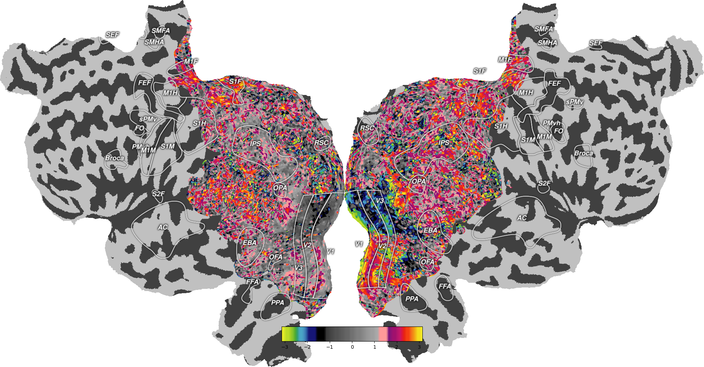

Note
Click here to download the full example code
Plot Example Retinotopy Flatmaps¶
This demo shows how to plot example retinotopy data onto a subject’s brain on a flatmap. In order for this demo to work, you need to download this dataset, but that can also be done automatically through the urllib command that is included.
S1 is the example subject that comes with pycortex, but if you want to plot data onto a different subject, you will need to have them in your filestore, and you will also need a flatmap for them.

- 
Out:
Mask not found, generating...
import six
import cortex
import matplotlib.pyplot as plt
if six.PY2:
from urllib import urlretrieve
elif six.PY3:
from urllib.request import urlretrieve
# Download the dataset and load it
_ = urlretrieve("http://gallantlab.org/pycortex/S1_retinotopy.hdf",
"S1_retinotopy.hdf")
ret_data = cortex.load("S1_retinotopy.hdf")
# The retinotopy data has to be divided into left and right hemispheres
left_data = ret_data.angle_left
cortex.quickshow(left_data, with_curvature=True,
curvature_contrast=0.5,
curvature_brightness=0.5,
curvature_threshold=True)
plt.show()
right_data = ret_data.angle_right
cortex.quickshow(right_data, with_curvature=True,
curvature_contrast=0.5,
curvature_brightness=0.5,
curvature_threshold=True)
plt.show()
Total running time of the script: ( 0 minutes 8.269 seconds)